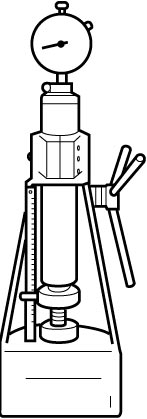

1D
| Valve Spring Inspection |
Valve Spring Free Length and Preload
•Check each valve spring for breakage or weakening.
•Measure valve spring free length and preload.
If measured value is less than limit, replace valve spring.
•Measure valve spring free length and preload.
If measured value is less than limit, replace valve spring.
NOTE:
Weakened valve spring can cause chatter, not to mention possibility of reducing power output due to gas leakage caused by decreased seating pressure.
Valve spring free length “a”
Standard: 38.79 mm (1.527 in.)
Valve spring preload when compressed to 30.5 mm (1.2008 in.)
Standard: 116 – 136 N (11.8 – 13.9 kgf, 26.1 – 30.6 lbf)
Limit: 102 N (10.4 kgf, 75.0 lbf)

 "Expand image")

 "Expand image")
Spring Squareness
Use a square and surface plate to check each spring for squareness in terms of clearance between end of valve spring and square. If clearance exceeds limit, replace valve springs.
Valve spring squareness “a”
Limit: 1.7 mm (0.0669 in.)
 "Expand image")